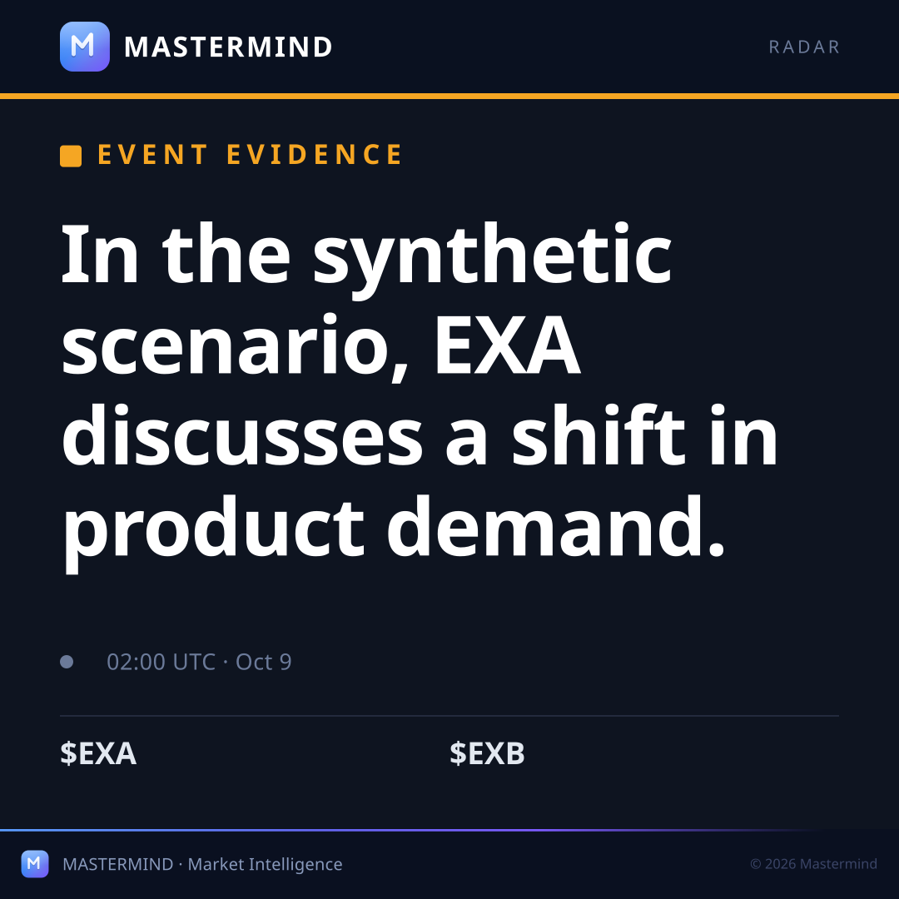

The verified evidence

Evidence, not a trading signal
An event-linked research preview following EXA, EXB. Every observation below is anchored to the source packet. Missing coverage stays visible.

Publisher/source identity and each publication clock are retained. The deep link carries event, tickers and canonical UTM attribution.
A newsletter-ready analysis, a social draft and a proposed embed are supplied as separate files beside this page. Nothing is scheduled or sent.
Unsolicited concept prepared for Illustrative chip-supply audience (demo only). No partnership, endorsement, or approval is implied.
Known missing data: Every issuer, affected symbol and claim is synthetic.; The scan destination is an unregistered placeholder.
Inspect the same event scan